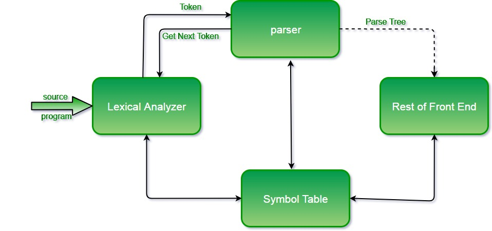
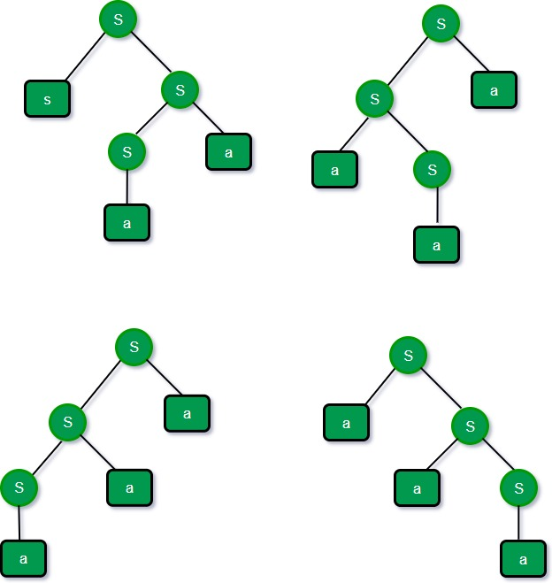
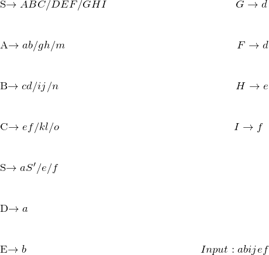
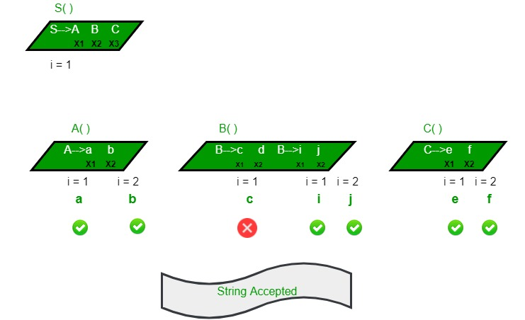
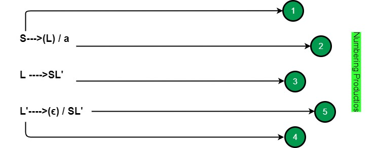
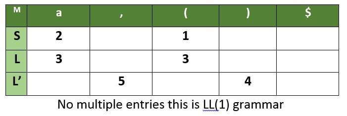
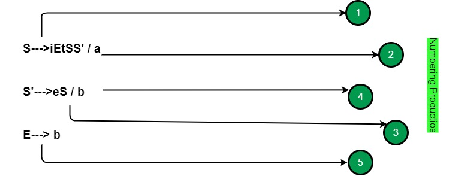
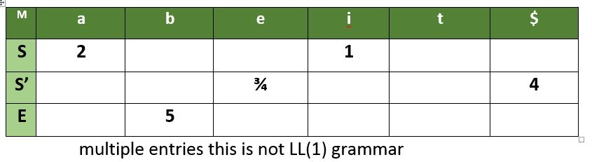
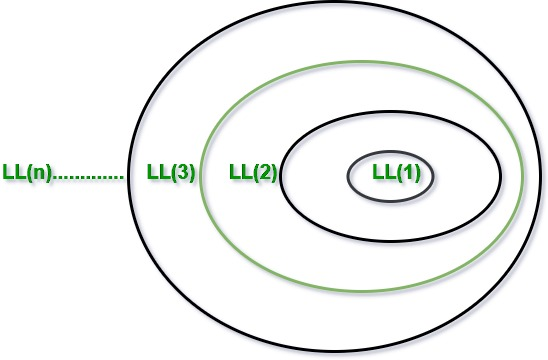

In this article we will study about various types of parses. It is one of the most important topic in Compiler from GATE point of view. The working of various parsers will be explained from GATE question solving point of view.
Prerequisite – basic knowledge of grammars, parse trees, ambiguity.
Role of the parser :
In the syntax analysis phase, a compiler verifies whether or not the tokens generated by the lexical analyzer are grouped according to the syntactic rules of the language. This is done by a parser. The parser obtains a string of tokens from the lexical analyzer and verifies that the string can be the grammar for the source language. It detects and reports any syntax errors and produces a parse tree from which intermediate code can be generated.

Before going to types of parsers we will discuss on some ideas about the some important things required for understanding parsing.
Context Free Grammers:
The syntax of a programming language is described by a context free grammar (CFG). CFG consists of set of terminals, set of non terminals, a start symbol and set of productions.
Notation – α → β where α is a single variable [V]
β ∈ (V+T)*
Ambiguity
A grammar that produces more than one parse tree for some sentence is said to be ambiguous.
Eg- consider a grammar
S -> aS | Sa | a
Now for string aaa we will have 4 parse trees, hence ambiguous

For more information refer quiz.geeksforgeeks.org/ambiguous-grammar/
Removing Left Recursion :
A grammar is left recursive if it has a non terminal (variable) S such that their is a derivation
S -> Sα | β
where α ∈ (V+T)* and β ∈ (V+T)* (sequence of terminals and non terminals that do not start with S)
Due to the presence of left recursion some top down parsers enter into infinite loop so we have to eliminate left recursion.
Let the productions is of the form A -> Aα1 | Aα2 | Aα3 | ….. | Aαm | β1 | β2 | …. | βn
Where no βi begins with an A . then we replace the A-productions by
A -> β1 A’ | β2 A’ | ….. | βn A’
A’ -> α1A’ | α2A’ | α3A’| ….. | αmA’ | ε
The nonterminal A generates the same strings as before but is no longer left recursive.
Let’s look at some example to understand better
![\\ Example 1: \\ \\S\rightarrow S\overset{\alpha _{1}}{ab} \hspace{2 mm}/\hspace{2 mm} S\overset{\alpha _{2}}{cd} \hspace{2 mm}/ \hspace{2 mm}S\overset{\alpha _{3}}{ef}\hspace{2 mm} /\hspace{2 mm} \overset{\beta_{1}}{g}\hspace{2 mm}/\hspace{2 mm}\overset{\beta_{2}}{h}\\ \\ S\rightarrow gS'/hS'\\ \\ S'\rightarrow \epsilon /abS'/cdS'/efS' \\ \\ Example 2:\\ \\ S\rightarrow (L)/a \hspace{2 cm} No\hspace{2 mm} left\hspace{2 mm} Recursion\\ \\ L\rightarrow L,S/S \hspace{2 cm} left\hspace{2 mm} Recursion\\ \\ L\rightarrow Sl' \\ \\ L'\rightarrow \epsilon/ SL' \\](../../../imgs/compiler/0573dadaa61532180995bd1bf3240b61.jpg "Rendered by QuickLaTeX.com")
Removing Left Factoring :
A grammar is said to be left factored when it is of the form –
A -> αβ1 | αβ2 | αβ3 | …… | αβn | γ i.e the productions start with the same terminal (or set of terminals). On seeing the input α we cannot immediately tell which production to choose to expand A.
Left factoring is a grammar transformation that is useful for producing a grammar suitable for predictive or top down parsing. When the choice between two alternative A-productions is not clear, we may be able to rewrite the productions to defer the decision until enough of the input has been seen to make the right choice.
For the grammar A -> αβ1 | αβ2 | αβ3 | …… | αβn | γ
The equivalent left factored grammar will be –
A -> αA’ | γ
A’ -> β1 | β2 | β3 | …… | βn

The process of deriving the string from the given grammar is known as derivation (parsing).
Depending upon how derivation is done we have two kinds of parsers :-
- Top Down Parser
- Bottom Up Parser
We will be studying the parsers from GATE point of view.
Top Down Parser
Top down parsing attempts to build the parse tree from root to leave. Top down parser will start from start symbol and proceeds to string. It follows leftmost derivation. In leftmost derivation, the leftmost non-terminal in each sentential is always chosen.
Recursive Decent Parsing
S()
{ Choose any S production, S ->X1X2…..Xk;
for (i = 1 to k)
{
If ( Xi is a non-terminal)
Call procedure Xi();
else if ( Xi equals the current input, increment input)
Else /* error has occurred, backtrack and try another possibility */
}
}
Lets understand it better with an example


A recursive descent parsing program consist of a set of procedures, one for each nonterminal. Execution begins with the procedure for the start symbol which halts if its procedure body scans the entire input string.
Non Recursive Predictive Parsing :
This type if parsing does not require backtracking. Predictive parsers can be constructed for LL(1) grammar, the first ‘L’ stands for scanning the input from left to right, the second ‘L’ stands for leftmost derivation and ‘1’ for using one input symbol lookahead at each step to make parsing action decisions.
Before moving on to LL(1) parsers please go through FIRST and FOLLOW
http://quiz.geeksforgeeks.org/compiler-design-first-in-syntax-analysis/
http://quiz.geeksforgeeks.org/compiler-design-follow-set-in-syntax-analysis/
Construction of LL(1)predictive parsing table
For each production A -> α repeat following steps –
Add A -> α under M[A, b] for all b in FIRST(α)
If FIRST(α) contains ε then add A -> α under M[A,c] for all c in FOLLOW(A).
Size of parsing table = (No. of terminals + 1) * #variables
Eg – consider the grammar
S -> (L) | a
L -> SL’
L’ -> ε | SL’


For any grammar if M have multiple entries than it is not LL(1) grammar
Eg –


Important Notes
1. If a grammar contain left factoring then it can not be LL(1)
Eg - S -> aS | a ---- both productions go in a
2. If a grammar contain left recursion it can not be LL(1)
Eg - S -> Sa | b
S -> Sa goes to FIRST(S) = b
S -> b goes to b, thus b has 2 entries hence not LL(1)
3. If a grammar is ambiguous then it can not be LL(1)
4. Every regular grammar need not be LL(1) because
regular grammar may contain left factoring, left recursion or ambiguity.

We will discuss Bottom Up parser in next article (Set 2).
{kind=link}